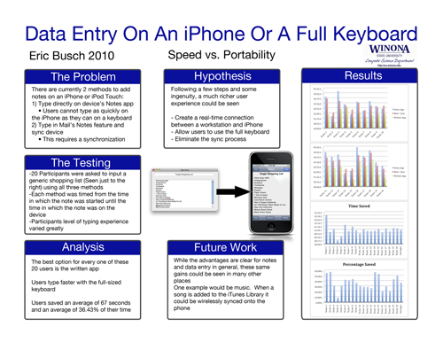

-
current project

The name of the project is the "Sensor Equipped Parking Lot", the purpose of this project is help people use an Iphone application that is integrated with a sensor - equipped parking lot to find where have the empty place that they can park their Vechile. For more infroamtion please visit this page computer science project.
-
additional project

The name of this projecy is "Why But a CPS Clicker When You Can Use Your Laptop - a classroom testing solution for laptop universities" the purpose of this project is to create a testing system designed for use with laptops to benfit universities with a laptop program. The system prevents students form being able to cheat while taking exams. And the system allow instructor to create test and students to be able to submit answer using their laptops.For more infroamtion please visit this page computer science project.
-
In 2010 
The name of this project is "Data Entry On An Iphone Or A Full Keybord" The purpose of this project following a few step and some ingenuity. a mcuh richer user experience could be seen and create a real time connection between a workstation and iphone, and allow user to use the full keyborad or eliminate the sync process. For more infroamtion please visit this page computer science project.